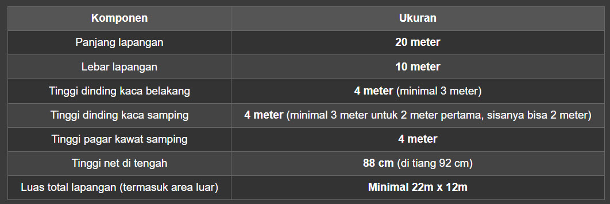
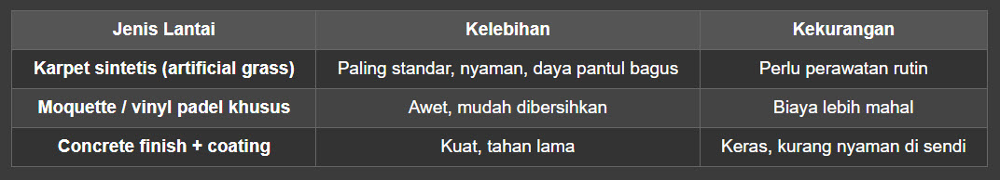
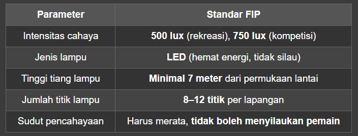
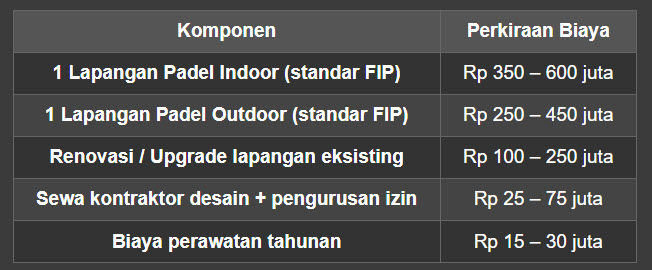
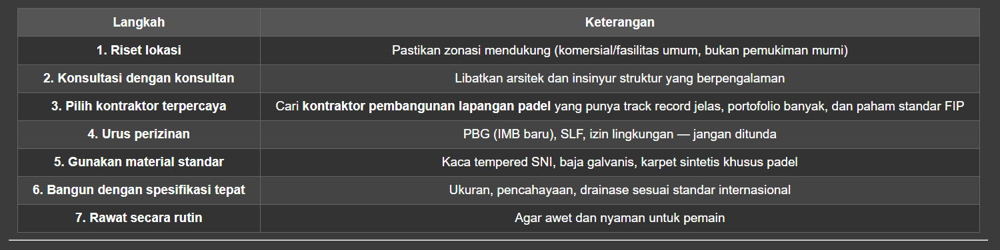

Panduan dari AZ untuk Pemilik Bisnis, Investor, dan Kontraktor
Olahraga padel — perpaduan antara tenis dan squash yang berasal dari Meksiko dan populer di Spanyol serta Amerika Latin — kini sedang booming di Indonesia. Dalam dua tahun terakhir, lapangan padel bermunculan di manamana: dari Jakarta, Surabaya, Batam, Pekalongan, hingga Bali. Namun, di balik popularitasnya yang melesat, banyak pemilik bisnis dan investor yang gagal paham soal ketentuan teknis, perizinan, dan standar pembangunan yang benar.
Bahkan, berdasarkan pemberitaan terbaru, hampir separuh lapangan padel di Jakarta ternyata tidak memiliki izin, dan beberapa proyek terpaksa dihentikan karena masalah perizinan dan struktur bangunan. Ada juga kasus ambruknya atap lapangan padel di Meruya karena pengerjaan struktur yang tidak sesuai rencana.
Nah, supaya Anda tidak ikutikutan kena masalah, artikel ini akan membahas secara lengkap dan mendalam tentang apa saja yang harus diperhatikan saat membangun lapangan padel. Dari standar internasional, material, perizinan, hingga tips memilih kontraktor pembangunan lapangan padel yang terpercaya.
📌 Daftar Isi
1. Apa Itu Lapangan Padel dan Kenapa Lagi Hits?
2. Standar Ukuran & Dimensi Lapangan Padel Internasional
3. Material & Spesifikasi Teknis yang Wajib Dipenuhi
4. Ketentuan Lantai, Dinding Kaca, dan Pagar Kawat
5. Sistem Pencahayaan (Lighting) Standar
6. Drainase & Fondasi: Jangan Sampai Salah Hitung
7. Perizinan Pembangunan Lapangan Padel — Yang Sering Dilupakan
8. Aturan Baru: Larangan Lapangan Padel di Pemukiman
9. Tips Memilih Kontraktor Pembangunan Lapangan Padel Profesional
10. Estimasi Biaya Pembangunan Lapangan Padel
11. Studi Kasus: Kesalahan Fatal dalam Pembangunan Lapangan Padel
12. Kesimpulan & Rekomendasi
1. Apa Itu Lapangan Padel dan Kenapa Lagi Hits? 🎾
Padel adalah olahraga raket yang dimainkan secara berpasangan (doubles) di lapangan tertutup berukuran lebih kecil dari tenis. Bedanya dengan tenis biasa:
Lapangan dikelilingi dinding kaca dan pagar kawat sehingga bola bisa memantul — mirip squash.
Ukuran lapangan lebih kecil: 10 meter x 20 meter.
Net di tengah lebih rendah.
Skor dihitung seperti tenis (15, 30, 40, game).
Di Indonesia, padel mulai naik daun sejak 20232024. Banyak pengusaha, pengembang properti, hingga klub olahraga berlombalomba membangun lapangan padel untuk menarik pengunjung.
Tapi masalahnya: banyak yang asal bangun tanpa mengikuti standar, dan berujung pada sengketa dengan warga, pelarangan oleh pemda, hingga kecelakaan struktural.
2. Standar Ukuran & Dimensi Lapangan Padel Internasional 📏
Berdasarkan standar International Padel Federation (FIP) yang juga diadopsi oleh PP Padel Indonesia (PPI), berikut ukuran resmi lapangan padel:

Catatan penting:
Dinding belakang harus seluruhnya dari kaca temper (bukan akrilik biasa) setinggi 4 meter.
Dinding samping: 2 meter pertama dari belakang adalah kaca, sisanya pagar kawat.
Area bebas di luar lapangan minimal 1,5 meter di setiap sisi.
3. Material & Spesifikasi Teknis yang Wajib Dipenuhi 🔧
Ini adalah bagian yang paling sering dilanggar oleh kontraktor abalabal. Berikut material standar yang harus digunakan:
A. Kaca Dinding (Tempered Glass)
Kaca tempered (bukan kaca biasa atau akrilik).
Ketebalan minimal 10–12 mm untuk dinding belakang dan samping.
Harus tahan benturan bola padel (bisa sampai kecepatan 150 km/jam).
Pemasangan harus menggunakan rangka baja galvanis atau aluminium.
Tidak boleh menggunakan kaca biasa karena risiko pecah dan cidera pemain.
B. Pagar Kawat (Wire Mesh)
Material kawat baja galvanis (galvanized steel wire).
Diameter kawat minimal 2,5 mm – 3 mm.
Ukuran lubang kawat: 5 cm x 5 cm.
Tinggi pagar: 4 meter dari permukaan lantai.
Harus dikencangkan dengan sistem tensioning agar tidak kendor.
C. Struktur Rangka
Bisa menggunakan baja ringan (galvalum) atau baja profil (Hbeam/WF).
Semua rangka harus dicoating anti karat (hotdip galvanized).
Untuk lapangan outdoor, pastikan struktur tahan cuaca ekstrem (hujan, panas, angin).
D. Lantai Lapangan
Standar FIP mengatur lantai harus memiliki daya pantul bola yang konsisten. Opsi yang umum:

Rekomendasi: Gunakan karpet sintetis khusus padel setebal 12–15 mm dengan infill pasir silika.
4. Ketentuan Lantai, Dinding Kaca, & Pagar Kawat Secara Detail
Lantai
Warna lantai standar: biru atau hijau (tidak boleh menyilaukan).
Harus memiliki sistem drainase yang baik agar tidak becek.
Permukaan harus antislip tapi tidak terlalu kasar.
Dinding Kaca
Posisi dinding kaca belakang: sejajar dengan garis baseline.
Pemasangan kaca harus menggunakan frame aluminium atau stainless steel.
Sambungan antar panel kaca harus rapat dan menggunakan sealant khusus.
Untuk keamanan, kaca harus memiliki sertifikasi SNI atau setara.
Pagar Kawat
Dipasang di sisi samping (setelah area kaca) dan di atas kaca.
Harus kencang (tidak kendor) — kawat kendor bisa mengganggu pantulan bola.
Dilengkapi dengan pipa penguat horizontal setiap 1 meter.
5. Sistem Pencahayaan (Lighting) Standar 💡
Pencahayaan adalah aspek krusial karena padel sering dimainkan di malam hari.

> Tips: Gunakan lampu LED dengan CRI >80 dan suhu warna 4000–5000 Kelvin (cool daylight) untuk visibilitas terbaik.
6. Drainase & Fondasi: Jangan Sampai Salah Hitung 🏗️
Banyak kontraktor pembangunan lapangan padel yang meremehkan aspek fondasi dan drainase. Akibatnya, lapangan cepat rusak, becek, bahkan ambles.
Fondasi
Untuk lapangan outdoor: gunakan pondasi batu kali + cor beton minimal kedalaman 40 cm.
Untuk lapangan rooftop: lakukan analisis struktur bangunan dulu — jangan asal taruh.
Semua tiang penyangga harus terkait dengan sloof beton bertulang.
Drainase
Kemiringan lantai: 0,5% – 1% (sekitar 5–10 cm per 10 meter).
Sistem drainase bawah permukaan (subsurface drainage).
Saluran air di sekeliling lapangan dengan tutup grating.
7. Perizinan Pembangunan Lapangan Padel — Yang Sering Dilupakan 📋
Ini adalah masalah nomor satu yang bikin banyak lapangan padel dibongkar atau ditutup. Berdasarkan berita dari CNA.id, hampir 50% lapangan padel di Jakarta tidak punya izin, dan tidak ada satu pun yang memiliki Sertifikat Laik Fungsi (SLF).
Berikut dokumen perizinan yang wajib Anda urus:
A. Izin Mendirikan Bangunan (IMB) / Persetujuan Bangunan Gedung (PBG)
Wajib untuk bangunan permanen.
Prosesnya melalui OSSRBA atau DPMPTSP setempat.
Biaya: bervariasi tergantung luas dan zona.
B. Sertifikat Laik Fungsi (SLF)
Wajib setelah bangunan selesai dan sebelum dioperasikan.
Diterbitkan oleh Tim Ahli Cipta Karya (TACK) atau konsultan manajemen bangunan.
Tanpa SLF, lapangan Anda ilegal dan bisa ditutup kapan saja.
C. Izin Lingkungan / UKLUPL
Wajib jika lapangan dibangun di area komersial atau pemukiman.
Mengatur soal kebisingan, lalu lintas, dan dampak sosial.
D. Izin Gangguan (HO) / Surat Keterangan Tetangga
Jika lokasi berdekatan dengan pemukiman, Anda perlu surat persetujuan warga.
Jika tidak, Anda bisa dilaporkan seperti yang terjadi di Keputih (Surabaya) dan Jaksel.
8. Aturan Baru: Larangan Lapangan Padel di Pemukiman 🚫
Berdasarkan berita CNN Indonesia dan Sinar Harapan (Februari 2026), Pemprov DKI Jakarta secara resmi melarang pembangunan lapangan padel di area pemukiman. Kenapa?
1. Kebisingan: Suara bola yang memantul dari pagar kawat dan kaca menimbulkan polusi suara yang mengganggu warga.
2. Lalu lintas: Lapangan padel menarik banyak pengunjung, menyebabkan kemacetan di jalan sempit.
3. Pencahayaan: Lampu sorot lapangan mengganggu rumah warga di malam hari.
4. Peruntukan lahan: Banyak lahan pemukiman yang disalahgunakan menjadi lahan komersial.
Apa yang harus Anda lakukan?
Pastikan lahan Anda masuk zona Perdagangan & Jasa atau Fasilitas Umum.
Jika di pemukiman, ajukan perubahan zonasi dulu ke pemerintah daerah.
Alternatif: bangun di area mal, hotel, sports center, atau kawasan komersial.
9. Tips Memilih Kontraktor Pembangunan Lapangan Padel Profesional 🛠️
Ini dia bagian yang paling penting: memilih kontraktor pembangunan lapangan padel yang benarbenar paham standar dan aturan.
❌ Ciriciri Kontraktor Abal-abal:
Harga jauh di bawah rata-rata pasar.
Tidak bisa menunjukkan portofolio proyek sebelumnya.
Tidak punya sertifikasi (ISO, asosiasi kontraktor, atau referensi FIP).
Janji "cepat selesai" tanpa perencanaan detail.
Tidak membahas perizinan sama sekali.
✅ Ciriciri Kontraktor Profesional:
✅ Punya pengalaman minimal 5–10 proyek lapangan padel
✅ Bisa memberikan gambar teknis (DED) dan struktur detail
✅ Paham soal standar FIP dan ketentuan perizinan daerah
✅ Menggunakan material bersertifikat (kaca tempered SNI, baja galvanis)
✅ Memberikan garansi pengerjaan (minimal 1–3 tahun)
✅ Membantu pengurusan IMB/PBG dan SLF
✅ Transparan soal RAB (Rencana Anggaran Biaya)
✅ Memiliki asuransi konstruksi untuk melindungi proyek Anda
📋 Pertanyaan yang Wajib Diajukan ke Kontraktor:
1. "Sudah berapa banyak lapangan padel yang Anda bangun dalam 2 tahun terakhir?"
2. "Apakah Anda paham standar FIP dan PPI?"
3. "Bagaimana sistem drainase yang Anda gunakan?"
4. "Apakah Anda bisa membantu mengurus PBG dan SLF?"
5. "Apa garansi yang Anda berikan untuk struktur dan material?"
10. Estimasi Biaya Pembangunan Lapangan Padel 💰
Biaya pembangunan lapangan padel sangat bervariasi tergantung lokasi, spesifikasi, dan kontraktor. Berikut kisaran harga pasar saat ini:

Faktor yang mempengaruhi harga:
Lokasi: Jakarta dan sekitarnya lebih mahal (ongkos kirim material, sewa alat berat).
Jenis lantai: Karpet sintetis impor lebih mahal dari lokal.
Atap: Lapangan indoor butuh struktur atap baja tambahan.
Pencahayaan: LED standar kompetisi lebih mahal dari standar rekreasi.
Perizinan: Biaya pengurusan PBG + SLF + Izin Lingkungan.
> 💡 Tips: Jangan tergiur harga miring. Lapangan padel yang murah biasanya menggunakan material kaca biasa (bukan tempered), pagar kawat tipis, dan lantai abalabal. Akibatnya: cepat rusak, tidak nyaman dimainkan, dan berbahaya bagi keselamatan pemain.
11. Studi Kasus: Kesalahan Fatal dalam Pembangunan Lapangan Padel
Kasus 1: Runtuhnya Atap Lapangan Padel Meruya (Jakarta Barat) — Oktober 2025
Masalah: Struktur atap tidak sesuai dengan rencana teknis. Kontraktor mengganti spesifikasi baja tanpa sepengetahuan pemilik.
Akibat: Atap ambruk saat hujan deras, beruntung tidak ada korban jiwa.
Pelajaran: Struktur itu urusan nyawa. Jangan pernah kompromi dengan spesifikasi material. Gunakan kontraktor pembangunan lapangan padel yang punya insinyur struktur bersertifikat.
Kasus 2: Proyek Lapangan Padel Keputih (Surabaya) Dihentikan — Februari 2026
Masalah: Warga protes karena suara bising dan proyek tidak memiliki izin lingkungan.
Akibat: Proyek dihentikan sementara oleh pemerintah kota.
Pelajaran: Jangan remehkan komunikasi dengan warga. Urus izin dulu, sosialisasi dengan tetangga, baru bangun.
Kasus 3: 50% Lapangan Padel di Jakarta Tidak Punya Izin
Masalah: Pemprov DKI menemukan banyak lapangan beroperasi tanpa IMB/PBG dan SLF.
Akibat: Risiko pembongkaran dan denda administratif.
Pelajaran: Perizinan bukan opsional. Ini kewajiban hukum yang harus dipenuhi sebelum operasi.
12. Pemeliharaan & Perawatan Lapangan Padel 🔄
Setelah lapangan selesai dibangun, Anda perlu merawatnya secara rutin agar awet dan nyaman:
Perawatan Harian
- Sapu lantai dari debu dan pasir.
- Periksa kondisi pagar kawat (apakah ada yang kendor atau rusak).
- Bersihkan kaca dari sidik jari dan noda.
Perawatan Mingguan
- Cuci lantai dengan air dan sikat lembut (untuk karpet sintetis).
- Periksa baut dan sambungan rangka.
- Cek ketegangan net.
Perawatan Bulanan
- Periksa sistem drainase (saluran air).
- Lumasi engsel pintu lapangan.
- Cek kondisi lampu LED (apakah ada yang mati atau redup).
Perawatan Tahunan
- Ganti karpet sintetis jika sudah aus (biasanya tahan 3–5 tahun).
- Cat ulang rangka baja jika mulai berkarat.
- Kalibrasi ulang pencahayaan.
- Periksa sertifikat laik fungsi (SLF) — perpanjang jika perlu.
13. Kesimpulan & Rekomendasi ✅
Membangun lapangan padel itu bisa jadi bisnis yang menguntungkan, tapi juga bisa jadi petaka jika dilakukan secara asalasalan. Dari data dan berita yang beredar, banyak pengusaha yang merugi karena:
1. ❌ Bangun tanpa izin → ditutup pemda.
2. ❌ Kontraktor abalabal → bangunan ambruk.
3. ❌ Material murahan → cepat rusak, pemain tidak nyaman.
4. ❌ Tidak sosialisasi ke warga → diprotes dan dihentikan.
Rekomendasi Langkah Bijak:

🎯 Cari Kontraktor Pembangunan Lapangan Padel Terpercaya?
Jika Anda serius ingin membangun lapangan padel yang standar internasional, aman, dan berizin lengkap, pastikan Anda bekerja sama dengan:
> Kontraktor pembangunan lapangan padel profesional yang berpengalaman dalam proyekproyek di Jakarta, Surabaya, Bandung, Bali, Batam, dan kotakota besar lainnya.
Yang harus Anda dapatkan dari kontraktor:
✅ Gambar teknis (DED) yang detail
✅ Material bersertifikat (kaca tempered, baja galvanis, karpet padel)
✅ Tenaga ahli bersertifikat (insinyur struktur, arsitek)
✅ Pengurusan PBG, SLF, dan izin terkait
✅ Garansi pengerjaan minimal 1–3 tahun
✅ Asuransi konstruksi untuk keamanan proyek Anda
📱 Ingin Konsultasi Gratis?
Butuh bantuan untuk:
- Menentukan spesifikasi lapangan padel yang tepat?
- Membandingkan harga dari beberapa kontraktor?
- Mengurus perizinan PBG dan SLF?
- Diskusi desain lapangan padel indoor atau outdoor?
Hubungi tim konsultan kami di Padekkultura sekarang juga untuk konsultasi GRATIS di Whatsapp 081217481860 Kami akan membantu Anda merencanakan proyek lapangan padel dari awal hingga akhir — termasuk rekomendasi kontraktor pembangunan lapangan padel terbaik di kota Anda.
⚡ FAQ: Pertanyaan Umum tentang Pembangunan Lapangan Padel
Q: Berapa lama waktu pembangunan lapangan padel?
A: Ratarata 2–3 bulan untuk lapangan standar, tergantung kondisi lahan dan cuaca.
Q: Apakah lapangan padel bisa dibangun di rooftop?
A: Bisa, tapi harus ada analisis struktur bangunan oleh insinyur sipil. Jangan asal taruh karena risiko ambles atau runtuh.
Q: Berapa luas lahan minimal yang dibutuhkan?
A: Untuk 1 lapangan standar FIP, butuh lahan minimal 22m x 12m (termasuk area sirkulasi luar).
Q: Apakah kaca lapangan padel bisa pecah?
A: Kaca tempered standar FIP sangat kuat, tapi tetap ada risiko pecah jika terkena benturan keras atau benda tajam. Gunakan kaca tebal minimal 10–12 mm dengan frame yang kokoh.
Q: Apa itu Sertifikat Laik Fungsi (SLF) dan kenapa penting?
A: SLF adalah dokumen yang menyatakan bahwa bangunan aman dan layak digunakan. Tanpa SLF, lapangan Anda ilegal dan berisiko ditutup.
Q: Bisakah saya impor material lapangan padel dari luar negeri?
A: Bisa, tapi ada biaya bea masuk, pajak, dan ongkos kirim. Banyak kontraktor lokal sekarang sudah menyediakan material standar FIP dengan kualitas setara impor.
🏷️ Tags: kontraktor pembangunan lapangan padel, kontraktor lapangan padel, pembangunan lapangan padel, standar lapangan padel internasional, biaya bangun lapangan padel, harga lapangan padel, spesifikasi lapangan padel, perizinan lapangan padel, kontraktor padel indonesia, jasa pembangunan lapangan padel, desain lapangan padel, material lapangan padel, kaca tempered lapangan padel, lantai lapangan padel, sistem drainase lapangan padel, bisnis padel indonesia
Semoga artikel ini bermanfaat dan membantu Anda mewujudkan lapangan padel impian yang aman, legal, dan sesuai standar internasional! 🎾🔥